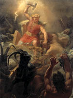

Тор ( "громовник"), в германо-скандинавської міфології бог грому, бурі і родючості. Він був одним з синів верховного бога Одіна і богині землі Ерд або Фьyoргюн. Назва бойового молота бога, Мьелльнір, могло колись означати слово "блискавка". Не можна не помітити, що Тор, найлютіший ворог велетнів, мав з ними багато спільного. Рудобородий богатир був вельми енергійний і володів неймовірним апетитом - за один присід з'їдав бика. Тор любив мірятися силою з усіма. Його величезну бронзову колісницю тягли по небу два козла, яких звали Тангніостр ( "скреготливий зубами") і Тангріснір ( "скрипучий зубами").
В чарівне спорядження Тора входили: молот (бойова сокира-блискавка), залізні рукавиці, без яких не можна було утримати рукоять розпеченого червоного знаряддя, і пояс, що подвоює силу. Молот Мьелльнір, викуваний для бога братами-карликами (цверги), символ творчих і руйнівних сил, джерело родючості та удачі, мав масивний бойок, коротку ручку і завжди потрапляв в ціль. З розпеченим молотом і поясом сили Тор був непереможний.
Правда, він був не в силах запобігти Рагнарок, день загальної загибелі, але зміг позбавити світ від змія Ермунганда. Тора постійно супроводжував бог вогню Локі, який зазвичай тримався за пояс громовника. Разом вони випробували безліч пригод, причому Тор не міг заперечувати, що в деяких випадках спритність і спритність Локі змушували велетнів бути насторожі. Прикладом цього - історія з чарівним молотом Тора, викраденим велетнем Трюмом. Новий господар в якості викупу запросив за молот ні багато ні мало - руку богині родючості Фрей. Локі умовив Тора переодягнутися в сукню Фрей і замість неї піти до трюму. Незважаючи на вовчий апетит "нареченої", який здивував нареченого, "служниця" (це був Локі) представила "наречену" зразком дівочої скромності. Зраділий Трюм передав Тору молот, а той, побивши велетня, відновив свою репутацію, злегка підмочену фактом переодягання в жіночий одяг.
Ще одна пригода Тора в країні велетнів також пов'язано з Локі. В землі людей, Мідгард, Тор найняв слуг, Тьяльві і Рёскву, брата і сестру. Сталося це так. Оскільки козли Тора служили джерелом невичерпної їжі, на нічлігах громовник вбивав і смажив їх, залишаючи недоторканими лише кістки, а потім повертав тварин до життя.
Під час обіду в селянській хаті син господаря, Тьяльві, не послухався Бога і, добираючись до кісткового мозку, розлущив одну з кісток. На ранок Тор чарівним молотом повернув козлів до життя і зауважив, що один з них охромел. Так, в якості викупу, Тьяльві і Рёсква навічно стали його слугами. Не доходячи до Йотунгейм, Тор, Локі, Тьяльві і Рёсква заночували в величезному порожньому будинку. Вранці вони зрозуміли, що взяли за будинок великий палець рукавиці велетня на ім'я Скрюмір ( "величезний"). Від ударів молота по голові сплячий велетень відмахувався, немов від впав сухого листа. Добравшись до стін Утгарда, мандрівники були здивовані величиною фортеці. Її мешканці, велетні, влаштували кілька змагань, в яких Локі, Тор і Тьяльві не зуміли перемогти. Спочатку бог вогню програв змагання хто швидше їсть; потім Тьяльві залишився далеко позаду в змаганнях з бігу; Тор не зміг осушити ріг, наповнений хмільний вологою, підняти кішку і навіть не зумів побороти Еллі, "стару-престару жінку". Залишаючи Утгард, Тор визнав свою поразку, але ватажок велетнів повідав йому, що все це - чаклунство. З'ясувалося, що Локі змагався з вогнем, Тьяльві - з власної думкою, а Тор намагався випити океан, підняти в повітря світового змія Ермунганда і побороти старість. Тут Утгард раптово зник. Тільки тоді Тор зрозумів, що Скрюмір і Утгард були ілюзіями, чаклунством, до якого вдалися страхіття велетні.
Бойовий молот Тора, Мьелльнір, служив богам захистом від велетнів і володів багатьма чарівними властивостями: впливав на родючість і смерть, міг повертати до життя тварин, благословляв шлюби. Всі міфи за участю Тора свідчать про необмежені руйнівних можливості його молота; подібно індійському богу грому і блискавки Індрі, Тор був нищителі зла, а в скандинавської міфології світове зло уособлювали велетні-Йотун. У день Рагнарок Тор прийняв смерть від сина Локі, змія Ермунганда. Громовник зніс потворну голову чудовиська і, відійшовши від нього всього на дев'ять кроків, потонув в потоці отрути, вивергає з разверстой пасти мертвої тварини.